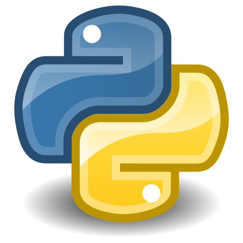

Python es un lenguaje de programación de alto nivel, interpretado y de propósito general, caracterizado por su sintaxis clara y legible que enfatiza la productividad del desarrollador. Utiliza un paradigma multiparadigma que admite programación orientada a objetos, estructurada y funcional, lo que facilita la creación de software mantenible y escalable.
Su ecosistema es ampliamente utilizado en áreas como el desarrollo web, la automatización de procesos, el análisis de datos y la inteligencia artificial. Gracias a su vasta colección de bibliotecas estándar y de terceros, Python permite ejecutar algoritmos complejos con un número reducido de líneas de código en comparación con otros lenguajes compilados.